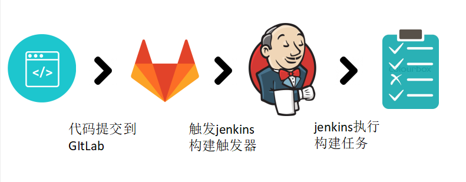

Webhook 通用触发插件

这篇文章将介绍我在 Jenkins 上遇到的一些常见问题，以及如何通过开发通用 Webhook 触发插件来解决这些问题。
问题
在使用 Jenkins 工作时，我经常遇到同样的问题：
- 代码重复和安全性-每个仓库中的
Jenkinsfiles。 - 分支不是功能-
master上的参数化任务通常会混合与不同功能相关的参数。 - 记录不良的触发器插件-记录正常服务但记录不佳的使用插件
代码重复和安全性
每个 Git 仓库中都有 Jenkinsfiles，使开发人员可以使这些文件分开。开发人员 push 他们的项目，并且很难维护共享代码的模式。
我几乎用共享库解决了代码重复问题，但是它不允许我设置必须遵循的严格模式。任何开发人员仍然可以决定不调用共享库提供的功能。
还允许开发人员运行 Jenkinsfiles 中的任何代码的安全性方面。例如，开发人员可能会打印从凭据收集的密码。让开发人员在 Jenkins 节点上执行任何代码对我来说似乎不合适。
分支不是功能
在 Bitbucket 中有项目，每个项目都有 git 仓库的集合。像这样：
PROJ_1REPO_1REPO_2
PROJ_2REPO_3
让我们考虑一下我们要为这些仓库提供的一些功能：
- pull request 验证
- 构建快照（如果需要的话，也可以预发布）
- 构建发布
如果开发人员习惯于在 Bitbucket 中像这样组织仓库，我们是否应该在 Jenkins 中以同样的方式组织它们？而且，如果他们浏览 Jenkins，是否不应该为每种功能（例如 pull-request，snapshot 和 release）找到一份构建任务？每个具有仅与该功能相关的参数的任务。我认同！像这样：
/- Jenkins root/PROJ_1- 一个文件夹，列出 git 仓库。/PROJ_1/REPO_1- 一个文件夹，列出与该仓库相关的任务。/PROJ_1/REPO_1/release- 一份构建任务，执行发布。/PROJ_1/REPO_1/snapshot- 一份构建任务，执行快照发布。/PROJ_1/REPO_1/pull-request- 一份构建任务，验证 pull-request。
…
在此示例中，snapshot 和 release 任务都可以在同一 git 分支上工作。不同之处在于它们提供的功能。它们的参数可以很好地记录下来，因为您不必混合与发行版和快照相关的参数。使用多分支流水线插件无法做到这一点，在多分支流水线插件中，您将参数指定为每个分支的 properties。
文献资料
Webhooks 通常在提供它们的服务中有据可查。例如：
令我困扰的是，即使我理解了这些 webhooks，我也无法使用它们。因为我需要在所使用的插件中进行开发，以便提供从 Webhook 到构建的任何值。从 PR 到实际发布，该过程可能需要几个月的时间。这样简单的事情实际上应该不是问题。
解决方案
我的解决方案几乎可以追溯到基本知识：我们有一个自动化服务（Jenkins），我们想在外部 Webhooks 上触发它。我们想从该 Webhook 收集信息并将其提供给我们的构建。为了支持它，我创建了通用 Webhook 触发器插件。
仓库中提供了最新文档，并且有一个完整的示例，其中使用 configuration-as-code 实现了 GitLab。在这里查看仓库。
代码重复和安全性
我制定了所有开发人员都必须遵循的约定。而不是让开发人员从 Jenkinsfiles 显式调用基础结构。遵循一些规则，例如：
- 所有的 git 仓库都应该从仓库的根开始构建。
- 如果包含
gradlew- 使用
./gradlew build完成构建 - 使用
./gradlew release完成发布 - ……等等
- 使用
- 如果包含
package.json- 使用
npm run build完成构建 - 使用
npm run release完成发布 - ……等等
- 使用
有了这些规则，流水线就可以完全通用，并且在仓库中不需要 Jenkinsfiles。由于某些原因，某些 git 仓库可能需要禁用测试用例。这可以通过允许仓库添加一个特殊文件，也就是 jenkins-settings.json 来解决，让基础架构发现其内容并对其采取行动。
即使没有执行 CI，这也可以帮助开发人员。当他们克隆一个新的，未知的仓库时，他们将知道可以发出哪些命令及其语义。
分支不是功能
我实现：
通过与 Job DSL 中的 git 服务集成，我可以自动找到 git 仓库。我创建动态组织在文件夹中的任务。还调用 git 服务来设置触发这些任务的 webhooks。任务是普通的流水线，不是多分支，它们不使用 Git 中的 Jenkinsfile，而是使用 Job DSL 在任务中配置的 Jenksinfile。因此，所有任务配置和流水线均受版本控制。这一切都在这里发生。
文献资料
该插件使用 JSONPath 以及 XPath 从 JSON 提取值并将其提供给构建。让用户从 webhook 中选择所需的内容。它还具有一个正则表达式过滤器，以允许在某些情况下不触发。
该插件不是很大，只是 webhook、JSONPath/XPath 和正则表达式之间的粘合剂。所有这些部分都已被很好地记录下来，我会尽力维护该插件。这是一个非常有据可查的解决方案！